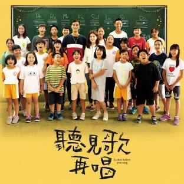

Last year I enjoyed the movie Listen Before You Sing. It is a movie based on a true story of a poorly-funded school in Taiwan in a rural aboriginal community. Although aboriginal culture in Taiwan traditionally has a lot of music and singing, these traditions are fading. A couple of teachers thought it would be a good idea to enter the students into a national singing competition as a way to help save the school. The story is about the aboriginal children learning to sing and competing against schools in the cities with far greater resources.
